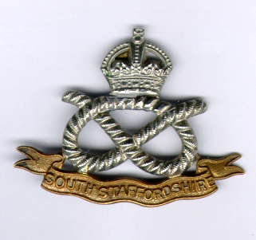
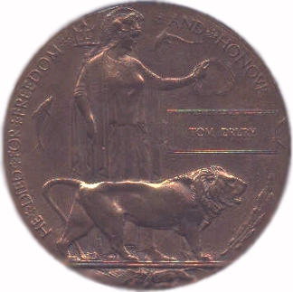

Tom Drury and the South Staffordshire Regiment/Labour Corp
This is a record of the military service of Tom Drury as recorded through unit histories and battalion diaries from the First World War. He served for most of the war in the 9th Battalion of the South Staffordshire Regiment. In 1917 he was transferred to the 1/5 South Staffs and shortly after that the Labour Corp. The account is divided into the main periods of service.



1/5 South Staffs and the Labour Corp
Final days and final resting place
Sources include:
Extracts from 9th South Staffs War Diary - transcribed by Mike Cooper
The 23rd Division 1914-19 HR Sandilands
History of the South Staffordshire Regiment J. P. Jones
